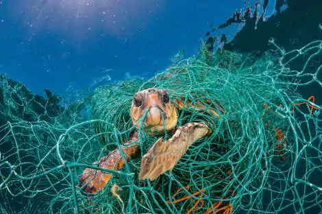
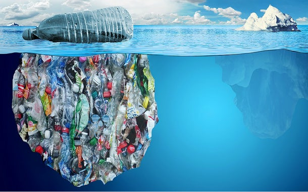
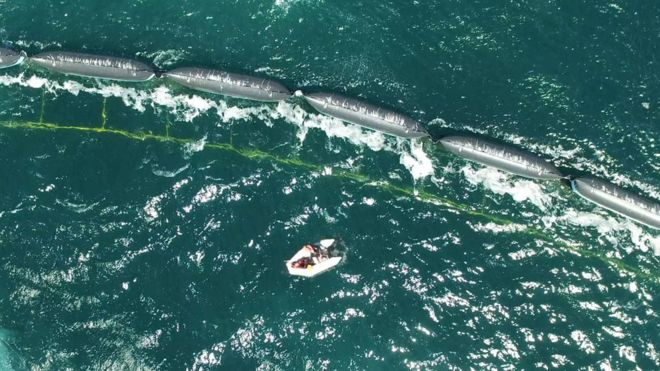
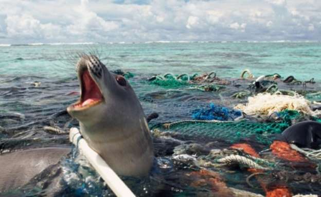

Esta imagem mostra uma garrafa jogada no mar com mais sujeira junto
Nessa imagem temos uma tartaruga presa no meio de redes de nylon
Essa imagem faz uma referência ao ditado "isso é só a ponta do iceberg", querendo dizer que o que a gente vê na superficie é pouco comparada com o que realmente tem de lixo no mar

Lixo boiando no mar
Uma das medidas de combater o lixo nos oceanos
Essa imagem mostra uma foca presa no meio do lixo